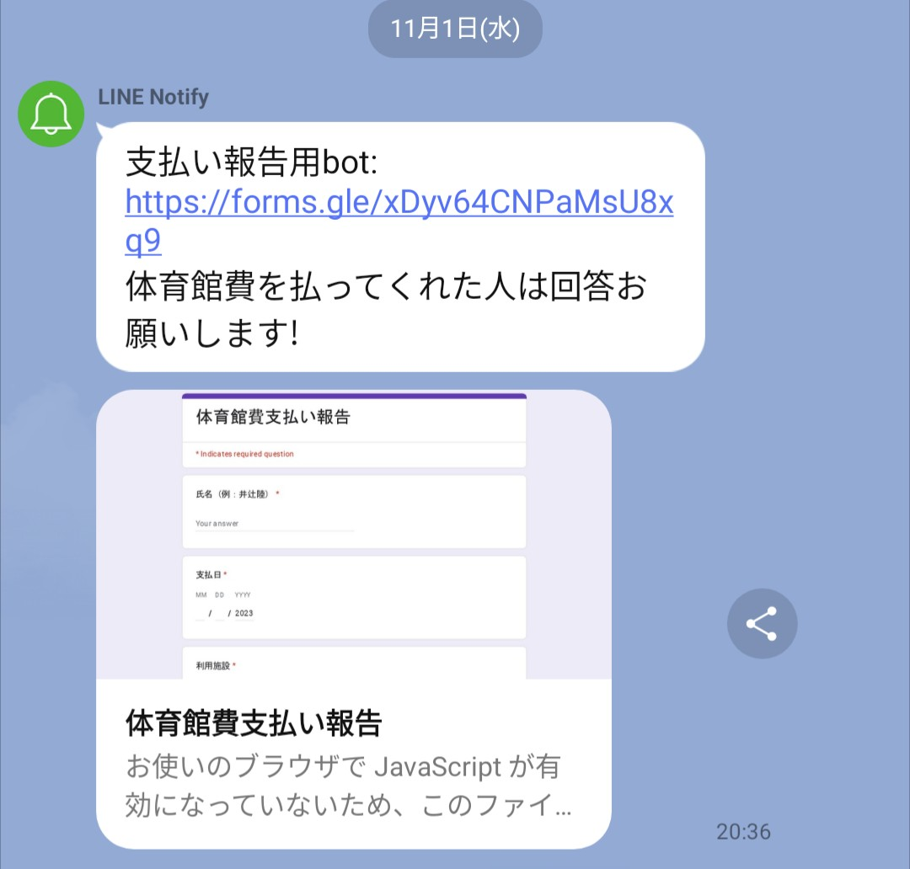
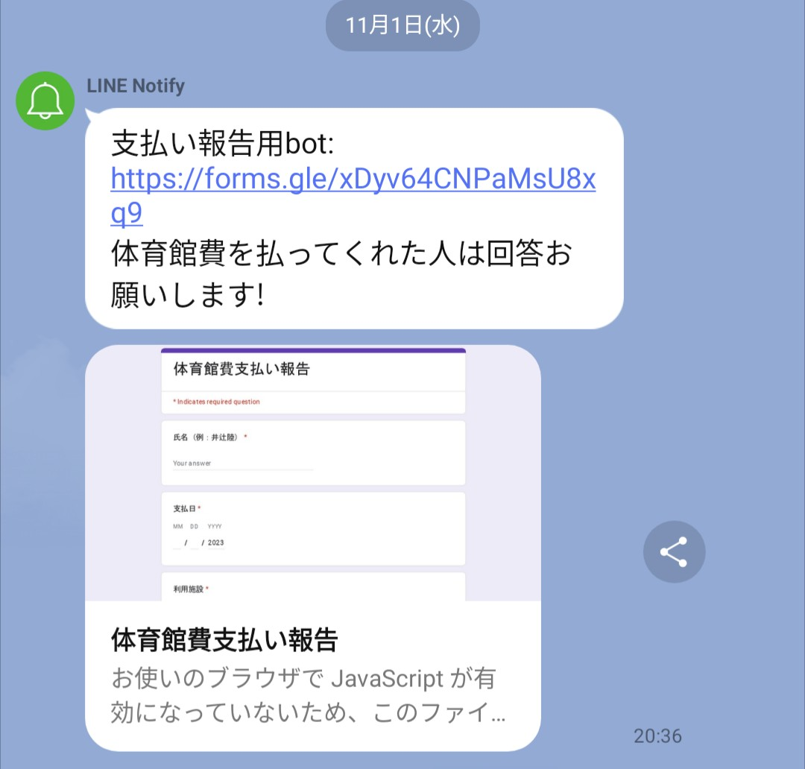

支出管理ボットの仕組み
練習後に部員に支払い報告を促す通知が来る
Googleフォームに必要な値を入力
送信ボタンを押してスプレッドシートに自動記録

コート代などの立替報告を簡単に且つ正確にできるシステムです。
私が所属するフットサルサークルでは、今まで部員が体育館代を立て替えた際、毎回会計係まで報告をする必要がありました。しかし、報告漏れや会計係とのやり取りの手間などの課題がありました。
練習後に部員に支払い報告を促す通知が来る
Googleフォームに必要な値を入力
送信ボタンを押してスプレッドシートに自動記録
pythonで通知を送るアルゴリズムの実装法や、LINEapiの活用法などを学ぶことが出来ました。また、課題点を抽出しユーザー目線で効率的な解決策を導く論理的思考力や、最後まで実装をやり抜く行動力が身に付きました。